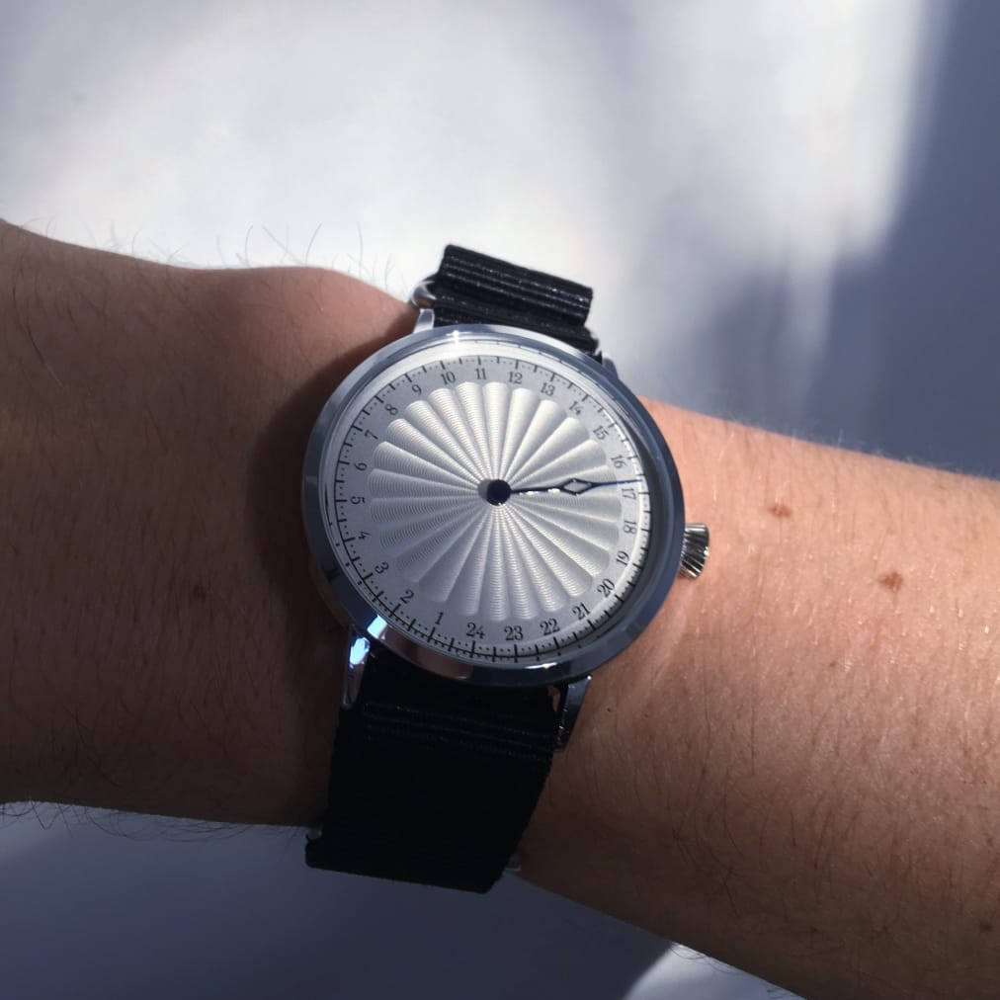

#product

The am-pm modes was never a good design. Modes in general isn't. A twenty-four hour watch makes sense, it's so logical. So simple, but complete. It is precise enough. Sometimes called a 'slow watch', it is both a timepiece and a reminder to live in slower and broader strokes than minutes and seconds.